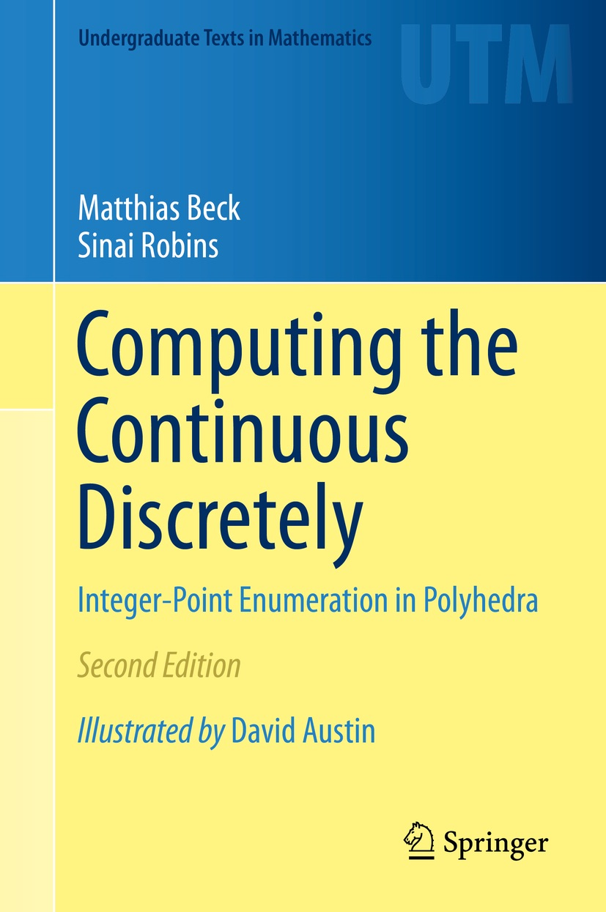

|
Computing the Continuous Discretely: Integer-Point Enumeration in Polyhedra is a book by Matthias Beck and Sinai Robins published by Springer in 2007 (first edition) and 2015 (second edition, with illustrations by David Austin). Here is the final draft of the second edition. (Please respect Springer's copyright; this pdf version is only for individual use and should not be distributed.)
Corrections & updates for the first edition
The German translation of the first edition (by Kord Eickmeyer) was published in 2008, the Japanese tranlsation (by Yoshio Okamoto) in 2010. Here is a series of videos supplementing the book.
Excerpts from Reviews
"This beautiful book presents, at a level suitable for advanced undergraduates, a fairly complete introduction to the problem of counting lattice points inside a convex polyhedron. [...] Most importantly the book gives a complete presentation of the use of generating functions of various kinds to enumerate lattice points, as well as an introduction to the theory of Ehrhart quasipolynomials."
"The authors give a coherent and tightly developed picture that encompasses the Frobenius coin-exchange problem, Bernoulli polynomials, Ehrhart polynomials for lattice point enumeration, Dehn-Sommerville relations on numbers of faces of polytopes, magic squares, the Birkhoff-von Neumann polytope, finite Fourier series, Dedekind sums, Brion's Theorem on decomposition of polytopes, Euler-Maclaurin summation, volume via solid angles, and Green's Theorem in the plane. The book is written as an accessible and engaging textbook, with many examples, historical notes, pithy quotes, commentary integrating the material, exercises, open problems and an extensive bibliography."
"You owe it to yourself to pick up a copy of Computing the Continuous Discretely to read about a number of interesting problems in geometry, number theory, and combinatorics, all of which are interconnected and all of which can be built up pretty quickly from very elementary techniques. Even people who are familiar with the material would almost certainly learn something from the clear and engaging exposition that these two authors use."
"The main topic of the book is initiated by a theorem of Ehrhart [...] This is a wonderful book for various readerships. Students, researchers, lecturers in enumeration, geometry and number theory all find it very pleasing and useful. The presentation is accessible for mature undergraduates. [...] it is a clear introduction to graduate students and researchers with many exercises and with a list of open problems at the end of each chapter."
"Many [mathematics] departments recognize the need for capstone courses in which graduating students can see the tools they have aquired come together in some satisfying way. Beck and Robins have written the perfect text for such a course. [...] The book develops a consistant theme--the relation between the (continuous) volume of a polytope and its discrete volume, namely, the number of integer points that lie inside it. With these familiar tools, the authors lead students to a host of results that will seem simultaneously concrete and magical and almost certainly unfamiliar. Summing Up: Highly recommended."
|

|
"The world is continuous, but the mind is discrete."
David Mumford